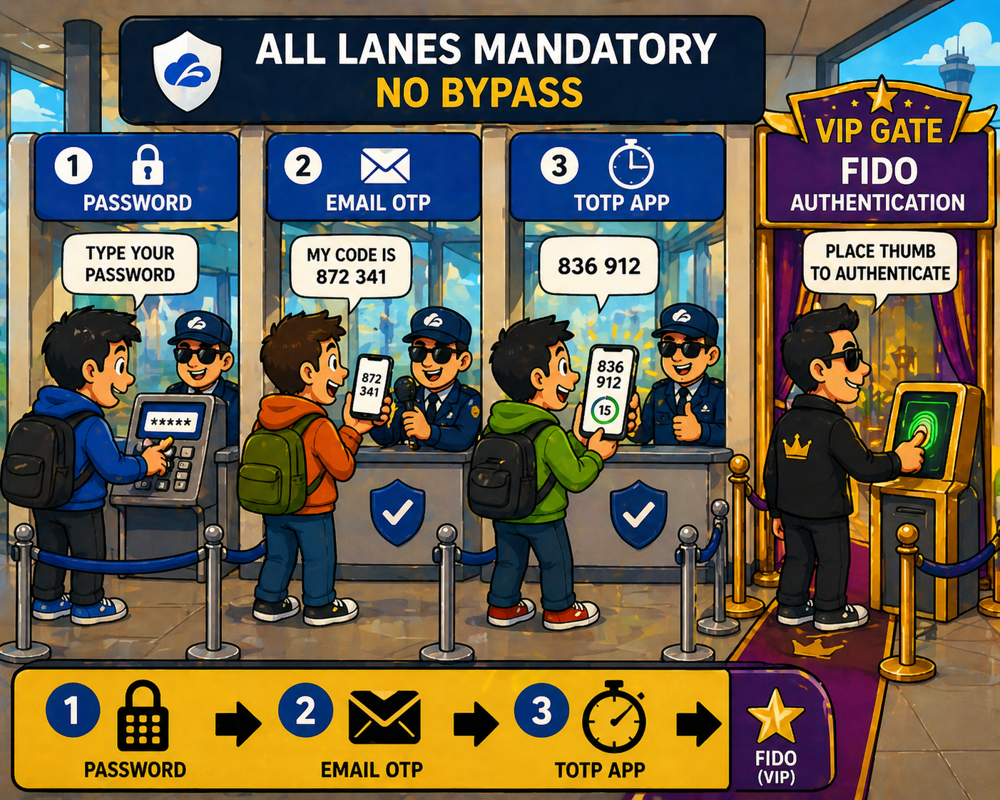

SAML AUTHENTICATION WORKFLOW
End-to-End SAML Flow
1 |
User | Requests an application. Not yet authenticated. |
2 |
ZIA / ZPA | Redirects user to authenticate. ZIA for public apps, ZPA for private apps. |
3 |
Zscaler → IdP | Sends a SAML authentication request to the external Identity Provider. |
4 |
IdP | Challenges the user to authenticate (MFA, password, etc.). |
5 |
IdP → Browser | Assembles a SAML Assertion, signs it cryptographically, and delivers it via the user's browser. |
6 |
Zscaler | Validates the digital signature — confirms trusted source and data integrity. |
7 |
Zscaler → User | Issues an auth token (to ZCC) or a cookie (to browser). User is now authenticated. |
8 |
User | Request resumes via the Zero Trust Exchange. Access granted. |

STEP-UP AUTHENTICATION
How Step-Up Triggers
1
User Logs In
Standard credentials (e.g. password only = AL1)
2
Sensitive Resource
Defined by ZIA or ZPA policy — e.g. finance app
3
Step-Up Triggered
Current AL insufficient — ZIdentity checks required level
4
MFA Prompt
User reauthenticates via MFA through ZCC
5
Access Granted
Higher AL satisfied — resource unlocked

AUTHENTICATION LEVELS
AL1 to AL4 — The Boarding Classes
🚌
AL1 — Economy
Password only. Lowest assurance. Basic access.
🚶
AL2 — Standard
Password + lightweight second factor. Normal access.
🏃
AL3 — Fast-Track
Stronger MFA required. Elevated assurance.
✈️
AL4 — Private Jet
Highest assurance. Strongest MFA. Critical resources only.
Key rule: Levels are hierarchical — a higher AL includes all lower ones. Policy defines which resource requires which AL.

AUTHENTICATION METHODS
The Four MFA Methods
Password
Single factor. Lowest assurance.
Email OTP
One-time code sent to email.
TOTP
Time-based OTP. Authenticator app.
FIDO
Fast Identity Online. Biometric / hardware key.
EXAM TRAP — MFA IS DEFAULT
MFA is required by default in ZIdentity — it is NOT optional. Questions implying it can be disabled or skipped are traps.

EXTERNAL IDENTITY PROVIDERS
SAML vs OIDC — Who Supports What
| Provider | SAML 4 IdPs | OIDC 5 IdPs |
|---|---|---|
| Okta | ✅ Supported | ✅ Supported (OIN App or Custom App) |
| Microsoft Entra ID | ✅ Supported | ✅ Supported |
| Microsoft AD FS | ✅ Supported | ❌ Not listed |
| PingFederate | ✅ Supported | ❌ Not listed |
| PingOne | ❌ Not listed | ✅ Supported |
| Auth0 | ❌ Not listed | ✅ Supported |
| OneLogin | ❌ Not listed | ✅ Supported |
Memory hook: SAML = 4 providers (established enterprise names). OIDC = 5 providers (adds PingOne, Auth0, OneLogin). AD FS is SAML only — don't assume all Microsoft products support both.

IDENTITY PROXY
Zscaler as IdP — The 8 Enforced Apps
When Zscaler is configured as the IdP for these apps, any attempt to access them without going through Zscaler fails. All auth is forced through the Zero Trust Exchange.
Box
GitHub
Google Apps
Microsoft 365
Salesforce
ServiceNow
ShareFile
Slack
Exam trap: Know the exact list of 8 apps. Side-door bypasses are blocked — not downgraded.

COMMON EXAM TRAPS
Identity Services — Watch Out For These
- Token vs Cookie: ZCC gets an auth token. A browser-only user gets a cookie. Don't mix these up.
- MFA is default: ZIdentity enforces MFA by default. Questions implying it's optional are traps.
- Step-up uses ZCC: The MFA prompt during step-up is delivered via Zscaler Client Connector, not the browser alone.
- AD FS is SAML only: Microsoft AD FS appears in the SAML list but NOT in OIDC. Don't assume all Microsoft products support both.
- Policy defines the AL: It's the ZIA or ZPA policy that specifies which resource requires which authentication level — not the user's role directly.
- Identity Proxy = forced routing: Accessing a proxy-protected SaaS app without Zscaler doesn't degrade experience — it fails entirely.